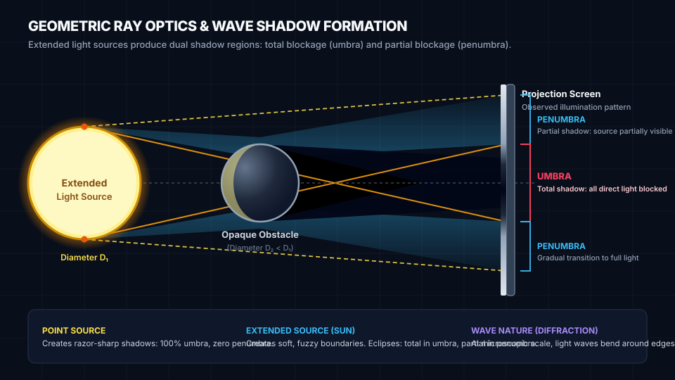

Foundational STEAM lesson for Light & Shadows.
Light travels in straight rays through a uniform medium. When an opaque obstacle blocks an extended light source (like the Sun or a light bulb), it casts two distinct shadow zones: a completely dark central umbra and a soft, partially shaded penumbra.
